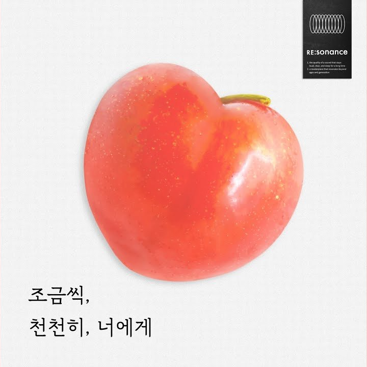

노리플라이 - 조금씩 천천히 너에게
안녕하세요 라보엠입니다.
노리플라이는 한국 가수중에 제가 가장 좋아하는 그룹인데요, 2006년 유재하 음악경연대회 은상을 받은 권순관, 정욱재의 듀오 밴드입니다. 2009년 노리플라이 정규 1집이 나오기 바로 직전 남과 여 그리고 이야기라는 컴필레이션 엘범에서 여성 가수 타루와 함께 조금씩 천천히 너에게 라는 노래로 참여했습니다. 이 앨범에는 이한철, 박새별의 바야흐로 사랑의 계절이라는 명곡도 첫번째 트랙에 담겨 있어요.
남과 여... 그리고 이야기
℗ Happy Robot Records
Released on: 2009-03-16
www.youtube.com
앨범이 나왔을 때 무한 반복해서 들었었는데, 적재님과 백아님이 RE:sonance 여섯 번째 프로젝트로 리메이크를 해주셨습니다.
??????? ????
• 적재, 백아 '조금씩, 천천히, 너에게' 2023년 4월 10일 ????????!
Lyrics by 권순관, 정욱재
Composed by 권순관
Arranged by 권영찬
• ????? 〈 조금씩, 천천히, 너에게 〉
RE:sonance 프로젝트 여섯 번째 아티스트는 적재 그리고 백아입니다. 노리플라이, 타루의 '조금씩, 천천히, 너에게'를 싱그러운 설렘으로 다시 불렀습니다. 익숙하고도 새로운, 우리가 사랑하는 선율들에 마음을 열게 됩니다. 처음 시작하는 사랑의 온도, 소리, 그리고 모양이 어떠했는지 잊게 될 즈음, 조금씩, 천천히 이 노래가 마음속에 피어나길 바라봅니다.
• ?????????? ???????? ????
조금씩, 천천히, 너에게 - 노리플라이 & 타루
조금씩 천천히 너에게 _ 가사
1.
몇 번을 펼쳐보았지 내 일기장 속에
수많은 너의 얘기들
참 사소한 작은 몸짓 하나에 의미를 둬
이상한 일이야 이렇게 된 내가
한참을 바라보았지 옆자리에 앉은 너를
머뭇거린 첫 인사에
하얀 손을 내밀어주며 밝게 웃던 네 모습이
커다란 의미로 다가오네
아직은 너를 알 수는 없지만
너와 난 서로 많이 다르지만
시간이 점점 흘러간 그만큼
조금씩 이끌려 너에게
2.
신기해 너라는 이름 아직 낯선 네가
마음 속 한켠에 남아
어색한 네 장난스러움이 난 왜 이리 재밌는지
널 보면 웃게 돼 이상하게
아직은 너를 알 수는 없지만
너와 난 서로 많이 다르지만
시간이 점점 흘러간 그만큼
조금씩 천천히 너에게
br.
가끔 넌 길게 한숨을 쉬곤 해
아픔이 아물지 않은 표정
지친 널 감싸 안을 내가 되었으면
아직은 너를 알 수는 없지만
너와 난 서로 많이 다르지만
시간이 나를 스쳐간 그만큼
조금씩 천천히 너에게
어느 날 문득 너에게 난
한없이 이끌려 너에게
원곡은 모던록의 비트가 있는 곡이었는데, 이번 리메이크에서는 봄에 어울리는 상콤한 보사노바풍으로 경쾌하게 편곡하여 처음 시작하는 연인의 모습이 그려지는 것만 같습니다. ^^
노리플라이의 유튜브 채널 공유하고 갑니다. 노리플라이는 정규 3집까지 발매하였으며, 권순관 앨범은 2집까지 나왔습니다.
노리플라이 / no reply
권순관[moment], 정욱재[TUNE]으로 구성된 듀오 노리플라이[no reply]의 공식 youtube 채널.
www.youtube.com
